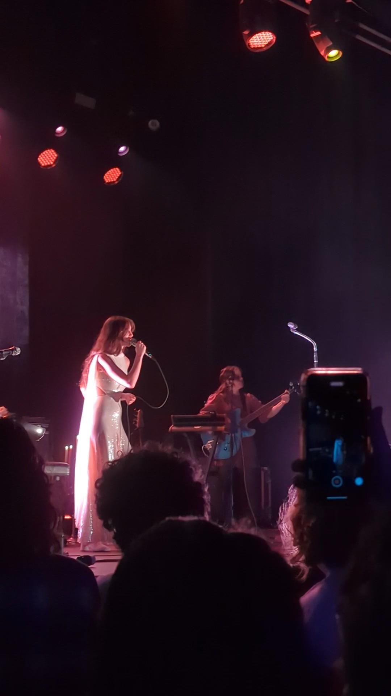

Crafting engaging and enjoyable gaming experiences involves not only following Game design UX best practices but also carefully considering UI positioning. Effective UX design encompasses the entire player journey, from the initial onboarding to overall satisfaction. It also extends to UI positioning, where the placement of critical interactive elements, such as action buttons and decision prompts, impacts user convenience and decision-making. Positioning key elements where users' fingers are naturally located, such as the right side of the screen for right-handed players, can enhance the player experience. By integrating these principles, game developers can create immersive, accessible, and enjoyable gaming experiences that keep players engaged and satisfied while maintaining a strong player community and extending the game's lifespan.
Learning Journal 4: Visual Thinking Analysis
homemade breads
This image is interesting as it features an array of Taiwanese bakery breads, including hot dog buns, pineapple buns, and scallion buns. What the image alone doesn't convey is the heartwarming backstory of how my mother and I spent a delightful summer learning to bake these bread varieties. I gained valuable insights into the art of yeast, witnessing the dough's transformation as it rose and understanding the crucial technique of kneading for that perfect bread shape. The photograph is intricately linked to the narrative of my food tasting journey. It signifies one of the many delicious foods I've both savored and prepared. My collection of food images illustrates my passion for exploring diverse cuisines and showcases my deep appreciation for the pleasures of savoring and creating delectable dishes.

concert
Thalia's image immerses the viewer in a concert atmosphere, it’s in dim lighting that reflects an intimate setting. The main attraction is a single singer in a shiny white gown, creating a dramatic and theatrical feeling. The use of light and shadow highlights one of the most captivating aspects of the image – the artist herself, bathed in a powerful spotlight that casts her performance in a magical vibe. As I examine this photograph, I’m drawn into the singer's emotional delivery, her heartfelt performance evident in her expression and posture. I’m not sure who this artist is, but the intriguing and mysterious aesthetics of this photo makes me want to go to her concert.
This article promotes the idea of encouraging students to slow down and engage in close reading of various texts, in order to develop their analytical skills and make meaningful connections. It emphasizes the need for patience and focus when approaching a text, as many students tend to rush through their reading. The article suggests treating close reading as a detective game, practicing regularly, asking open-ended questions, noticing details, building on others' observations, and adapting these skills for various subjects.
I believe these concepts can also be extended to college students, especially within the context of design classes. In these courses, students are frequently required to read articles, and I've found that I often skim through them rather than engaging in a thorough and comprehensive reading. If I can apply the same level of focus that I use when analyzing the "What’s Going On?" photographs to my reading materials, I believe it would significantly enhance my engagement and foster more meaningful connections with the content.
Overall, this article underscores the value of close reading and visual thinking skills. These skills can be applied in college, as they enhance critical thinking, analytical abilities, and genuine engagement with academic materials. By consistently applying these techniques, students can uncover the richness of knowledge in both textual and visual content, enhancing their educational experience.
Ray-Ban's website employs images and interactions in an intriguing manner to inspire visual thinking. Similar to Apple's website, as the user scrolls down the page, images pop up and change in size, perspective, and color. These interactions of the glasses keep me engaged with the page's content and encourages me to continue scrolling to explore the other exciting interactions featured on the page.
In User Interface (UI) design, modal windows have emerged as a pivotal tool, playing a crucial role in enhancing the user experience. These UI modal windows, also known as modals or modal dialogs, are versatile and dynamic design elements frequently integrated into web and mobile applications. Their presence, as contextual overlays, transforms the way users interact with digital platforms, offering a multitude of benefits that significantly contribute to the overall user satisfaction.
Modal windows are distinct from conventional pages or screens in that they temporarily seize the user's focus, compelling them to engage with a specific task or content while momentarily restricting interactions with the background content. These overlays often manifest at the center of the screen and are employed for a wide array of purposes. Modals are frequently employed for tasks such as user registration, login prompts, confirmation messages, and notifications. By isolating these actions within modal windows, users are shielded from distractions in the broader interface, allowing them to concentrate on the designated task, be it filling out a form or responding to a prompt. This deliberate focus significantly enhances the efficiency of these actions.
However, it is crucial to exercise prudence in implementing modal windows. Overuse or inappropriately designed modals can lead to user frustration and detract from the overall experience. The user should always have a clear and intuitive method to dismiss the modal and resume their interaction without hindrance.
In conclusion, UI modal windows have emerged as an elegant and powerful design solution, they excel in streamlining interactions, preserving context, and providing users with an improved experience by presenting information and tasks in a focused, accessible manner. When thoughtfully integrated, modal windows serve as a valuable asset in a designer's toolkit.
User experience (UX) design is a multifaceted field, and at its core, form design is a critical element. Form design goes well beyond appearances; it demands a profound comprehension of user behavior and psychology. Essentially, it's about constructing a smooth and efficient path for users, ensuring they navigate through the digital landscape seamlessly. To achieve this, adhering to the principle of "less is more" is crucial, streamlining the user experience by focusing on the essentials and eliminating superfluous elements. This strategy not only simplifies the user's journey but also reduces confusion, making form completion more efficient.
In the realm of form design, clarity reigns supreme. Users should never be left in the dark or compelled to make educated guesses. Instead, they should be provided with clear and concise instructions that act as guiding beacons, empowering them to traverse the form with confidence. This emphasis on clarity is fundamental to creating a positive user experience, ensuring that users feel in control throughout their interaction.
Accessibility is a pivotal aspect of form design, placing inclusivity at the forefront. It aims to make forms accommodating to individuals from diverse backgrounds and abilities. This involves considerations such as ensuring appropriate color contrast, legible text size, and compatibility with screen readers. In summary, form design within the UX domain combines aesthetics, psychology, and accessibility to establish an environment where users can effortlessly interact, resulting in an efficient and enjoyable digital journey. Well-crafted forms are not mere digital components; they are gateways to positive user experiences in the digital realm.
Apple's website showcases a remarkable example of exceptional UX form design. Its clean and visually appealing layout, combined with intuitive navigation, ensures a seamless user experience. By presenting products attractively and effectively, Apple sets a high standard for user-friendly web design.